2 UC Berkeley(*: Project leads, †: Direction lead)
LoGeR scales feedforward dense 3D reconstruction to extremely long videos. By processing video streams in chunks and bridging them with a novel hybrid memory module, LoGeR alleviates quadratic complexity bottlenecks. It combines Sliding Window Attention (SWA) for precise local alignment with Test-Time Training (TTT) for long-range global consistency, reducing drift over massive sequences up to 19,000 frames without any post-hoc optimization.
Scaling to unprecedented horizons. Even without backend optimization, LoGeR maintains strong geometric coherence and reduces scale drift over kilometer-scale trajectories.
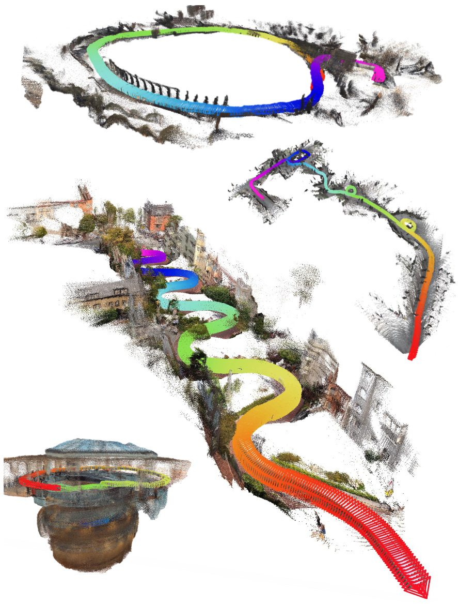
Visual gallery. Qualitative results on expansive in-the-wild and VBR sequences. Our fully feedforward approach accurately preserves large-scale structures and loop closures over thousands of frames.
Why Is Long-Context Reconstruction Hard?
Scaling feedforward 3D reconstruction to minutes-long videos is blocked by two fundamental barriers: an architectural "context wall" that restricts sequence length, and a training "data wall" that limits generalization to expansive environments.
Context Wall
While full bidirectional models (e.g., VGGT, π3) excel at local reasoning, their quadratic cost prohibits long-context scaling. Linear-memory alternatives (e.g., CUT3R, TTT3R) solve the computation bottleneck, but introduce lossy compression that degrades fine-grained geometric alignment.
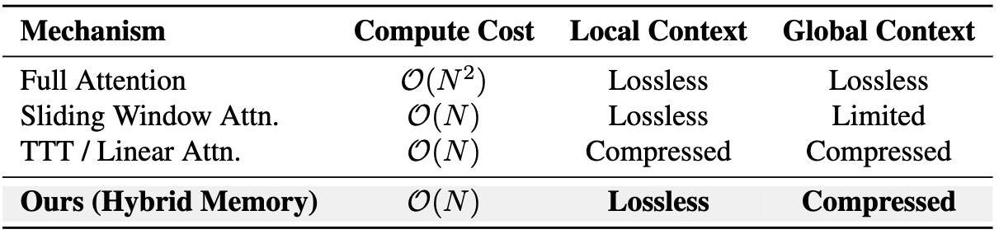
Architectural trade-off. LoGeR bypasses this trade-off with a hybrid memory architecture that maintains sub-quadratic linear scaling while preserving high-fidelity local geometry (via SWA) and ensuring global structure consistency (via TTT).
Data Wall
Simply engineering efficient attention (e.g., FastVGGT) isn't enough. Models trained solely on short-context "bubbles" inevitably fail to generalize to expansive, large-scale scenes.
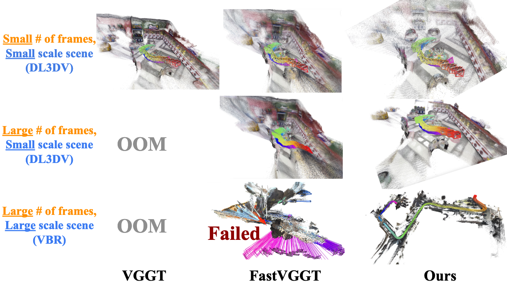
While efficient variants like FastVGGT alleviate memory bottlenecks, they still collapse on large-scale VBR trajectories.
How LoGeR Works
Scaling 3D reconstruction to minutes-long videos requires rethinking how we process and store geometric context. LoGeR introduces a chunk-based hybrid architecture that decouples short-range alignment from long-range global anchoring.
Method: Causal Chunk-wise Processing with Hybrid Memory Module
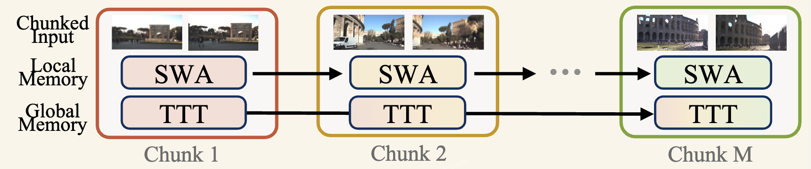
High-Level Abstraction. Instead of processing the entire video at once, LoGeR partitions the stream into manageable chunks. To maintain coherence across chunks, it employs a dual-pathway hybrid memory: Local Memory (SWA) ensures uncompressed, high-precision alignment between adjacent boundaries, while Global Memory (TTT) continually updates a compressed state to prevent scale drift over long sequences.
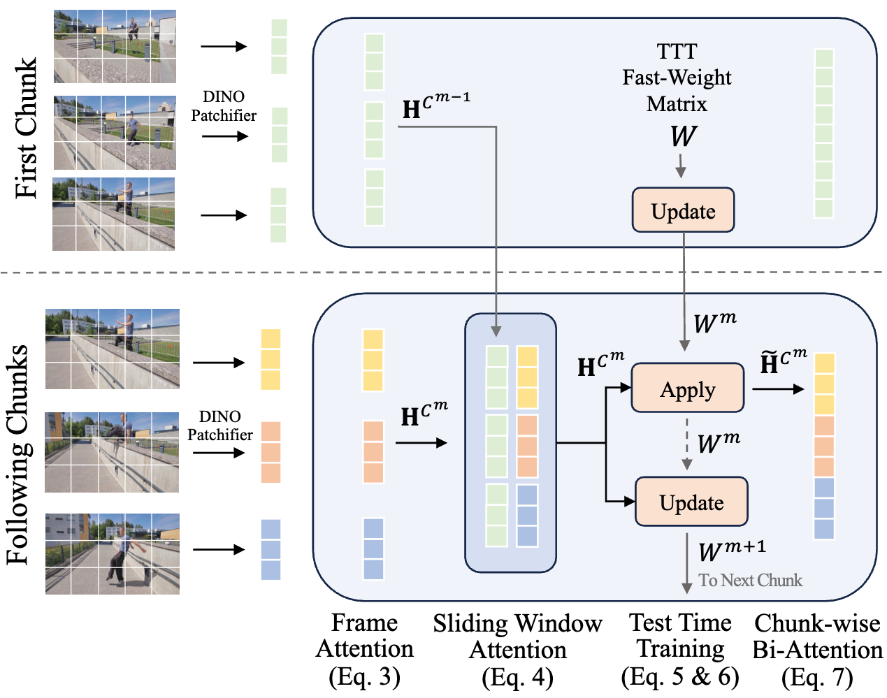
Detailed block structure of the hybrid memory module. Seamlessly integrating SWA and TTT to bridge consecutive video chunks.
Inside the Hybrid Memory Block
The internal data flow of a single residual block consists of four sequential operations:
1. Per-Frame AttentionExtracts spatial features independently for each frame to establish the 2D visual foundation.
2. Sparse SWA (Local Memory)Establishes a lossless information path across adjacent chunks to preserve high-precision geometric alignment.
3. Chunk-Wise TTT (Global Memory)Integrates long-range context by maintaining fast weights via an efficient apply-then-update procedure.
4. Chunk-Wise Bi-AttentionPerforms powerful, dense geometric reasoning within all the frames of the current chunk.
Results on Long Sequences
Strong performance on long horizons. On standard KITTI benchmarks, LoGeR reduces the average ATE to 18.65. On the 19k-frame VBR dataset, it delivers a 30.8% relative improvement over prior feedforward approaches.
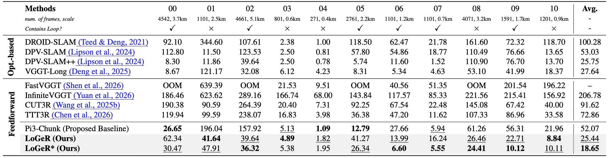
KITTI. Both Pi3-Chunk and LoGeR strongly outperform prior feedforward baselines, and LoGeR* achieves the best average ATE at 18.65.
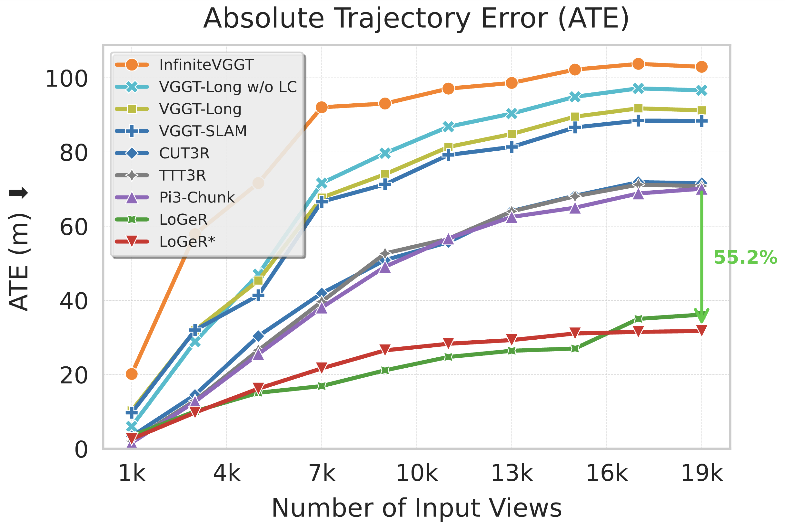
VBR quantitative. LoGeR increasingly pulls away as sequence length grows from 1k to 19k on extremely long trajectories.
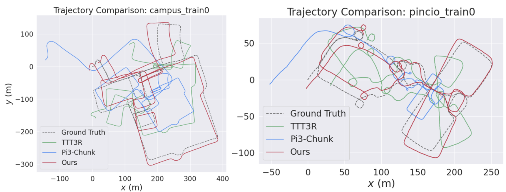
VBR qualitative. LoGeR accurately preserves global scale and trajectory over very long sequences, closely matching ground truth where prior methods suffer from severe drift.
Results on Short Sequences
LoGeR also remains highly competitive on short-sequence benchmarks. It achieves state-of-the-art reconstruction and pose accuracy while running significantly faster than full-attention baselines like VGGT.
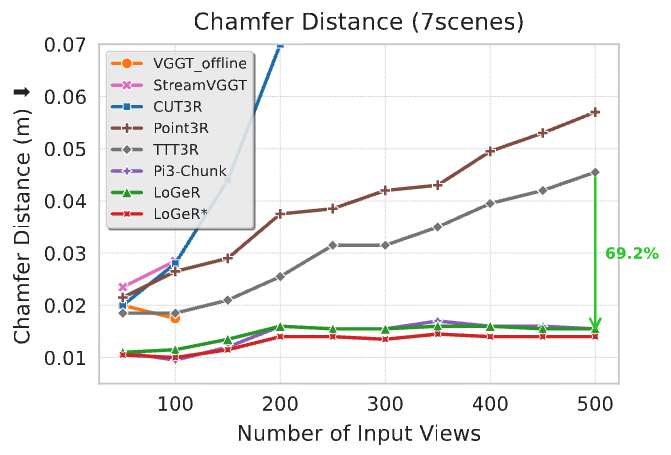
3D reconstruction of 7-Scenes (under TTT3R protocol). LoGeR and the Pi3-Chunk baseline both outperform prior work on 7-Scenes reconstruction, and LoGeR shows a 69.2% relative gain in our evaluation.
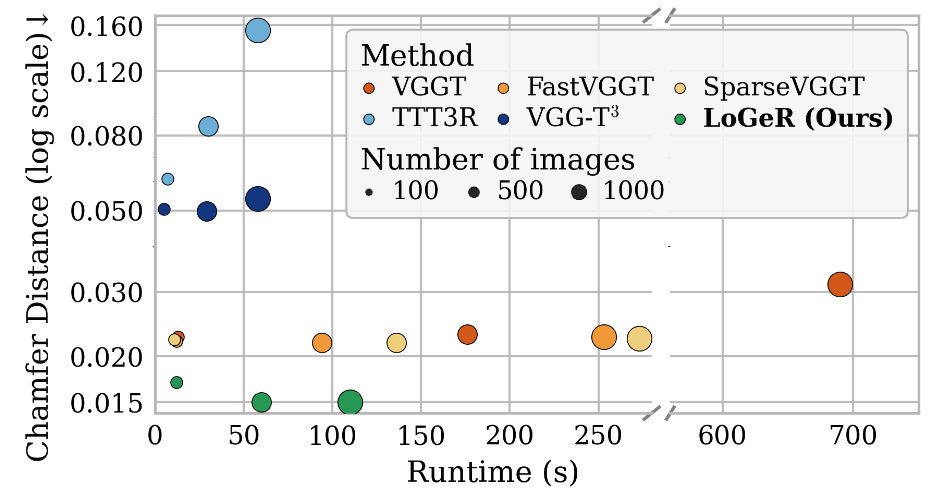
3D reconstruction of 7-Scenes (under VGG-T3 protocol). LoGeR maintains clear gains as we scale from 100 to 1k frames. At 1k frames, it reports 90.3% and 72.1% error reduction against TTT3R and VGG-T3, respectively.
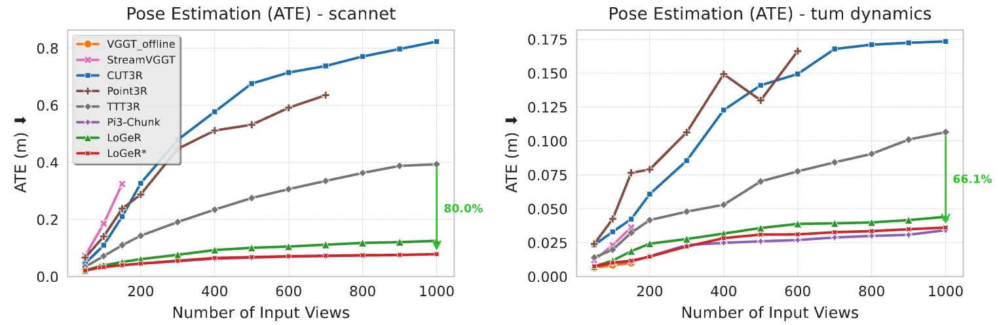
Pose evaluation on ScanNet and TUM-Dynamics (under TTT3R protocol). LoGeR substantially outperforms prior work on ScanNet and TUM-Dynamics, achieving 80.0% and 66.1% relative gains in our evaluation.
BibTex
@article{zhang2026loger,
title={LoGeR: Long-Context Geometric Reconstruction with Hybrid Memory},
author={Zhang, Junyi and Herrmann, Charles and Hur, Junhwa and Sun, Chen and Yang, Ming-Hsuan and Cole, Forrester and Darrell, Trevor and Sun, Deqing},
journal={arXiv preprint arXiv:2603.03269},
year={2026}
}
Acknowledgements:
We borrow this webpage template from SD+DINO, which is originally adapted from DreamBooth.
 1 Google DeepMind
1 Google DeepMind